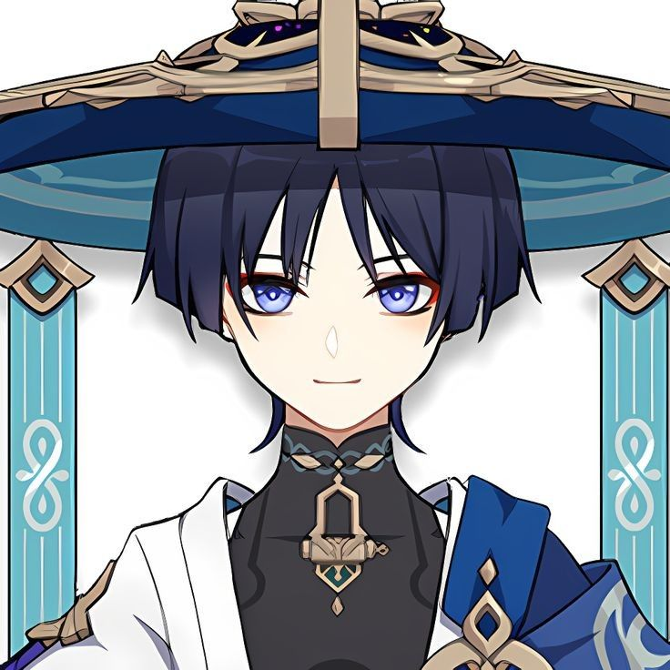

Kwame Yeboah
16 · Mataheko · SHS 1
Jolly in class, loud at home, playing games .
About Me
Hey, I'm Kwame also called KY. I live in Mataheko with my mum, my little brother Kojo, and our cat called MATHEW. Most mornings I wake up late, rush through my chores, and still wishes to get the person who decided to change his gender to a female a verry big smack on the face
I'm not the jolliest person in my class, but I pay attention. I like learning things that feel useful, especially when it comes to computers and design. On weekends you'll find me watching anime like GENSHIN IMPACT , helping my mum in the kitchen, or scrolling Youtube way longer than I should.
This page is just me - the real me. Not perfect, not trying too hard. Just a boy from Ghana figuring out who he wants to become.
A Few Things About Me
- Favorite food
- Fried Rice on Saturday morning.
- Favorite sport
- Javelin - Throwing sharp long rods to show my strength
- What I love doing
- Drawing, and thinking about my manga idea for my Mangaka journey , and gossiping with Addelaide she's litterally my partner in crime.
- Favorite game
- GENSHIN IMPACT and ANANTA - I play it like a pro .
- Favorite artist
- StoneBwoy , some his songs that i like are "Into the future,Ekelebe,Manodzi,Apotheke,Electric energy ,etc". That voice just hits different.
- Dream job
- Software engineer - I want to build apps people like me use to play high graphics anime games for free .
- Dream school
- Ashesi University. I've had the brochure saved on my phone for a year.
- Fun fact
- I can name every single character in the Naruto series from his childhood to his adult hood .
Where I'm Headed
Right now I'm focused on passing my BECE and getting into a good SHS. I know the road is not easy - fees, pressure, everyone asking what you want to do with your life - but I believe hard work pays. My mum always says, "Slowly slowly, the bird builds its nest."
One day I want to build something of my own. Maybe an app that helps students revise, or a business my family can be proud of. For now, I'm taking it one term at a time and trying to enjoy the journey.AUUGH!!!! I wish i could play all the anime games in the world